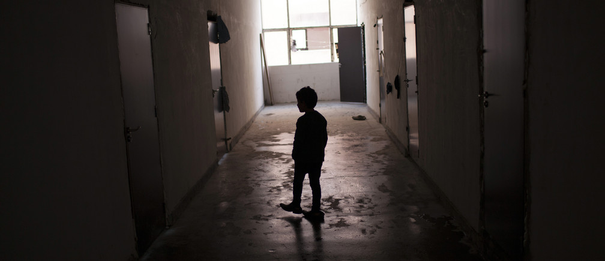

The major challenges to ending extreme poverty
- Poverty is perpetuated by a lack of healthcare and educational opportunities. People who lack a solid education find it difficult to make ends meet and have few career options. Illnesses that go untreated exacerbate poor health, which makes it harder for them to work. This financial hardship traps entire families in poverty for decades by making it difficult to purchase healthcare or excellent education.
- Beyond healthcare and education, underlying economic problems make it difficult to overcome poverty. Rich people and businesses frequently control a disproportionate amount of resources, which creates an unfair playing field (economic inequality). As a result of the scarcity of decent work, or job possibilities, rising up the economic ladder is challenging. Furthermore, social hurdles that prevent some groups from taking advantage of opportunities include discrimination on the basis of race, gender, or socioeconomic status. They are prevented from obtaining jobs that could help them escape poverty by this marginalization. Lastly, environmental harm and deteriorating road and bridge infrastructure make it more difficult for entire regions to grow economically. The combination of these problems creates a complicated web of difficulties that makes the elimination of poverty very challenging.
- Poverty is exacerbated by political unrest, corruption, and conflict. Resources intended to aid the impoverished are diverted by unstable regimes and dishonest officials, and livelihoods and infrastructure are destroyed by violent conflicts. People who don't have social safety nets are more susceptible to economic shocks and are forced back into poverty without a safety net to help them out.
- Reducing extreme poverty is a difficult task. It calls for a multifaceted strategy that takes care of both short-term issues and long-term issues. To enhance healthcare, employment, and education, we require focused initiatives. It's insufficient, though. In addition, we must address the more significant problems that contribute to poverty, such as conflict, bad governance, and economic injustice. Collaboration among local communities, national governments, and international organizations is necessary for genuine success. The secret is to fund initiatives that level the playing field for all parties and give marginalized groups more clout. Then and only then will we be able to pull millions out of poverty and make sustained progress.